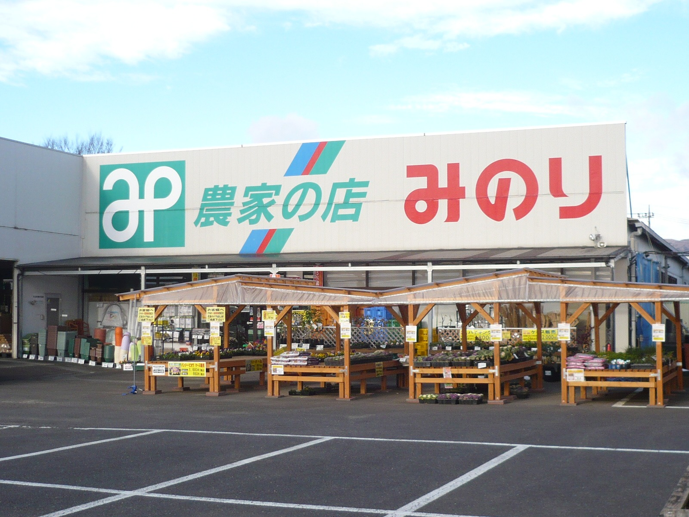
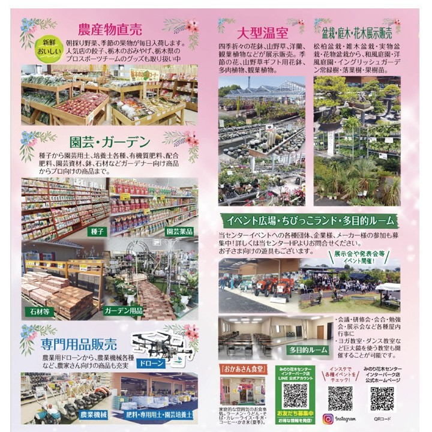

西那須野店

店舗情報
- 住所
- 〒329-2745
栃木県那須塩原市三区町510-2 - 電話番号
- 0287-36-7043
- 営業時間
- 平日：9:00 ～ 18:00
土曜日：9:00 ～ 17:00
日曜日・祝日：9:00 ～ 17:00
地図
店舗の特徴
西那須野店は、1992年4月にオープンしたみのりの第1号店です。
農業資材、農薬、肥料、機械など生産資材から、野菜・花の種や苗を扱う大型の専門店として、地域の農家さんをサポートしています。
広々とした店内には、3万点以上の商品を取り揃えており、プロの農家さんから家庭菜園愛好家まで、幅広いお客様にご利用いただいています。
